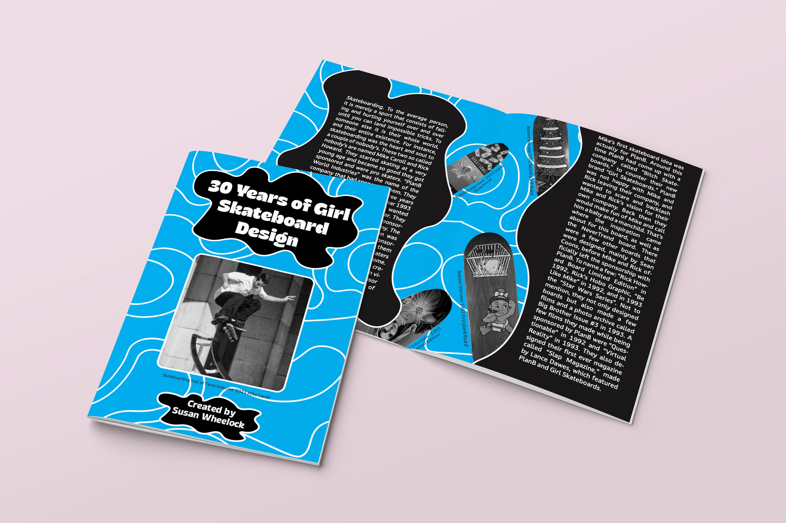
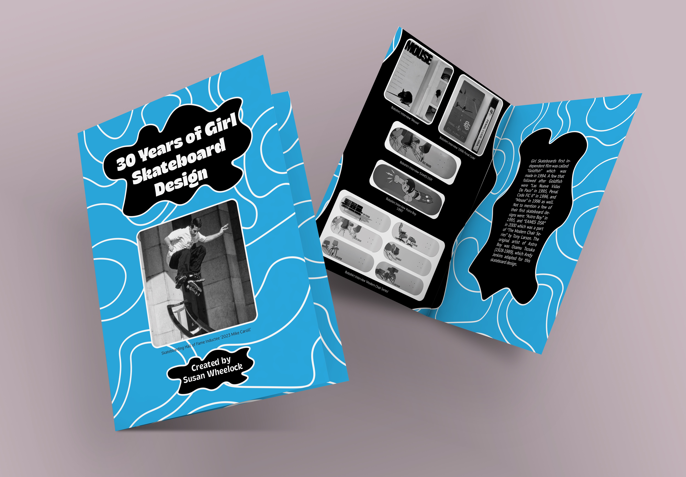
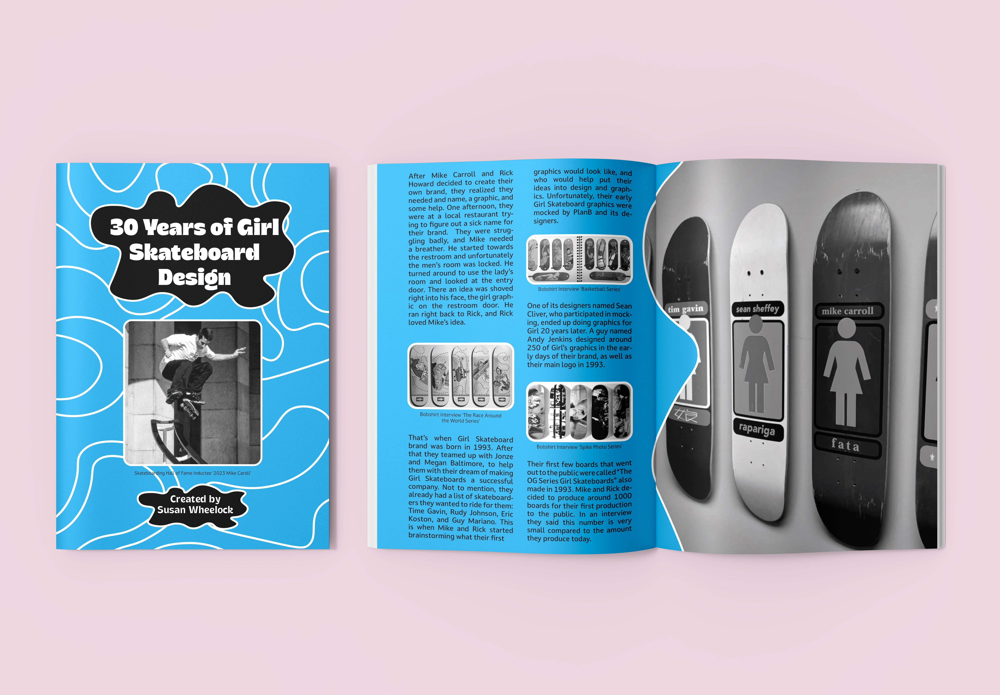

Girl Skateboard Zine
My directive for this zine was to choose a broad concept I enjoy and research a specified topic, and create a visual composition of the topic and what it means to me. There was a lot of creative freedom when I designed this zine, and it encompasses an interest of mine.
I chose the topic of one of the most popular skateboard brands, Girl Skateboard, because I wanted to learn more about this brand and its significance to skateboarding. I chose the primary colors blue and white because they are my favorite colors, and the color black. After all, it contrasts well with the other colors. I wanted the feel of the overall zine to flow together, and the background to feel like it was moving as a skateboard does.
Tools: Adobe InDesign, Adobe Photoshop,
Adobe Illustrator
Year: Spring, 2025


